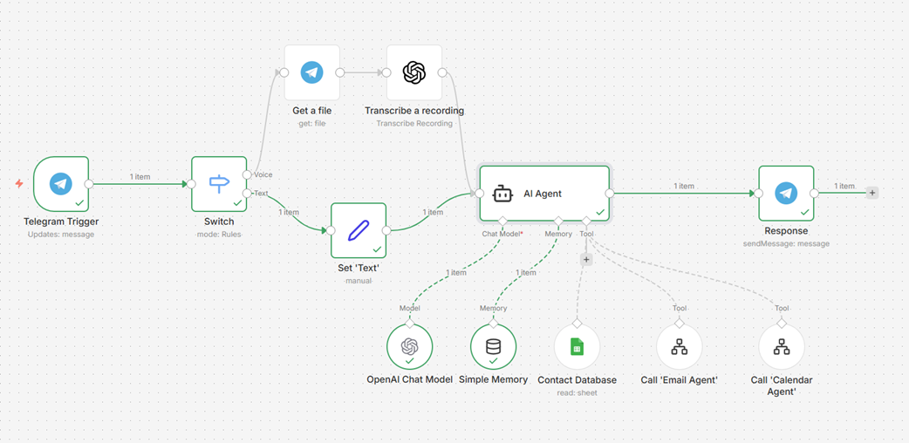
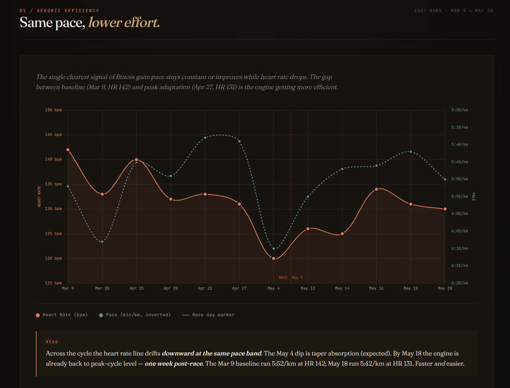

I don't theorise about AI. I deploy it.
As a transformation leader targeting CDO/CIO roles, credibility requires hands-on practice. Here is what I have built.
AI Voice Assistant — Calendar & Mailbox

An AI assistant accessible via voice message on Telegram. Send an audio note — the pipeline transcribes it, processes the intent, and acts: querying calendar and mailbox, creating events, or drafting email replies for review. Bidirectional with persistent memory across conversations.
Proactive weekly and daily briefings are pushed automatically — all meetings, tasks and priorities assembled every morning and Monday without any manual preparation.
AI Job Search Assistant — Opportunities & Network


An agent that searches LinkedIn for new opportunities, scores each role against a detailed executive profile, and returns a structured fit analysis — including network intelligence surfaced from existing LinkedIn connections.
The agent also monitors a Google Drive tracking file, reads the live action plan, and delivers daily reminders of open items — so nothing slips through.
AI Coaching Assistant — Touch Rugby & Running

A coaching system that genuinely replaces a human coach — not just tracking data but reading it, giving structured feedback after every session, and adjusting the training plan dynamically based on recovery signals and performance trends.
Daily Garmin health inputs (HRV, sleep, resting HR), TCX activity files, and a weekly MD memory file give the coach full context across every session — and dynamic dashboards visualise aerobic efficiency, load and race readiness over time.
This website itself was built using Claude Code — from a structured profile document to production-ready HTML, in a single working session. The build process is part of the story.